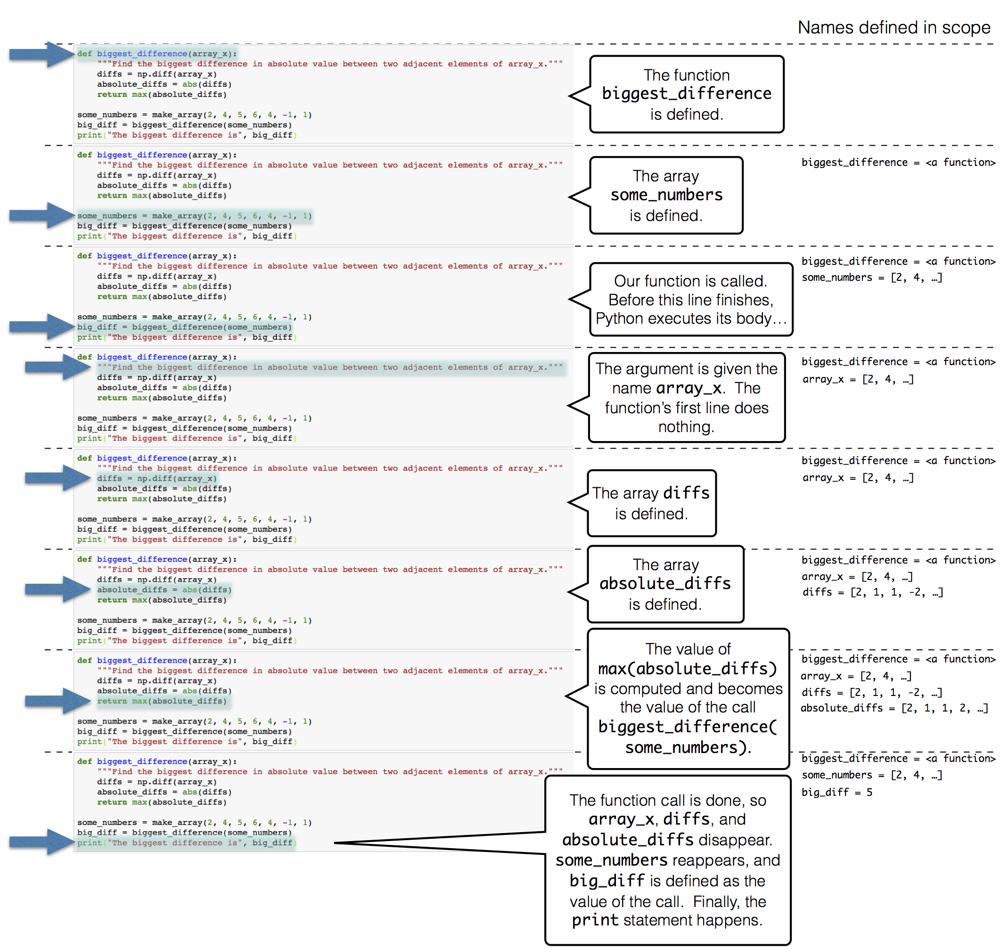

Functions and Tables
Contents
# initialization for my classroom
import os
from datetime import datetime as dt
def logfile(user=os.environ.get('JUPYTERHUB_USER') or 'jovyan'):
prefix='/srv'
if os.path.isdir(prefix) and os.access(prefix, os.W_OK):
prefix+=('/'+user)
if not os.path.isdir(prefix):
os.makedirs(prefix)
else:
prefix='.'
return prefix+'/'+dt.now().strftime('%Y%m%d')+'.log'
path=logfile()
#%logstop
%logstart -otq $path append
# [python - cannot override sys.excepthook - Stack Overflow](https://stackoverflow.com/questions/1261668/cannot-override-sys-excepthook/28758396)
# https://github.com/ipython/ipython/blob/e6432249582e05f438303ce73d082a0351bb383e/IPython/core/interactiveshell.py#L1952
import sys
import traceback
import IPython
try:
_showtraceback
except NameError:
_showtraceback=IPython.core.interactiveshell.InteractiveShell.showtraceback
try:
_showsyntaxerror
except NameError:
_showsyntaxerror=IPython.core.interactiveshell.InteractiveShell.showsyntaxerror
import logging
logging.basicConfig(filename=path.replace('.log','-exc.log'), format='%(asctime)s %(message)s', level=logging.ERROR, force=True)
import sys
import traceback
import IPython
def showtraceback(self, *args, **kwargs):
etype, value, tb = self._get_exc_info(kwargs.get('exc_tuple'))
stb = self.InteractiveTB.structured_traceback(
etype, value, tb, tb_offset=kwargs.get('tb_offset'))
logging.error(os.environ.get('JUPYTERHUB_USER') or 'jovyan')
logging.error(self.InteractiveTB.stb2text(stb))
_showtraceback(self, *args, **kwargs)
def showsyntaxerror(self, *args, **kwargs):
etype, value, last_traceback = self._get_exc_info()
elist = traceback.extract_tb(last_traceback) if kwargs.get('running_compiled_code') else []
stb = self.SyntaxTB.structured_traceback(etype, value, elist)
logging.error(os.environ.get('JUPYTERHUB_USER') or 'jovyan')
logging.error(self.InteractiveTB.stb2text(stb))
_showsyntaxerror(self, *args, **kwargs)
IPython.core.interactiveshell.InteractiveShell.showtraceback = showtraceback
IPython.core.interactiveshell.InteractiveShell.showsyntaxerror = showsyntaxerror
from datascience import *
import matplotlib
path_data = '../../assets/data/'
matplotlib.use('Agg')
%matplotlib inline
import matplotlib.pyplot as plots
plots.style.use('fivethirtyeight')
import numpy as np
8. Functions and Tables¶
Pythonで既に利用可能な関数を使用して、データセットのパターンやテーマを特定するための有用な技術資産を構築しています。ここでは、Pythonプログラミング言語の中核的な機能である関数定義について説明します。
この教科書では、すでに関数を広範囲に使用していますが、独自の関数を定義したことはありません。関数を定義する目的は、複数回適用できる計算処理に名前を付けることです。計算の世界では、繰り返し計算を必要とする場面が多くあります。例えば、表の列のすべての値に対して同じ操作を行いたいことはよくあることです。
Defining a Function
次の double 関数の定義は、単純に数値を2倍にするものです。
# Our first function definition
def double(x):
""" Double x """
return 2*x
8.1. 署名 signature¶
関数の呼び出しは次のようになります（名前と引数の数は同じです）。例:
double(3)doubleを呼び出すとき、引数は任意の式にすることができます。(名前xは呼び出しに影響しません)。関数の本体では、
xは引数の名前であり、あたかも本体がx = <最初の引数>というコードを含んでいるかのようになります。
8.2. 解説 (“docstring”)¶
その関数が行うことを説明するテキストです。
伝統的に三重引用符で囲まれているので、数行に渡って記述することができます。
伝統的に、最初の行はその関数が行うことを簡潔に説明します。
次の行では、より詳細な説明や例を示すことができます。
ちょうど
max?が組み込み関数 max のドキュメントを表示するように、double?を実行するとそのテキストが表示されます。
8.3. 本体 (body)¶
ここにあるすべてのコードは、この関数を呼び出すたびに実行されます。
特別なステートメント
returnは Python にこの関数の各呼び出しの値が何であるかを伝えます：それはreturnの後の式の値です。例えば、
double(3)の値は6です。(引数が3の場合、本体がx=3で始まっているようなものであることを忘れないでください。 多くの場合、本体にはreturnされた値を計算するためのコードが何行にもわたって書かれています。ここには、他の場所に書けるようなPythonのコードを書くことができます。
8.4. 段組 (indent)¶
本文中の各コード行はインデントされています（つまり、空白が前にあります）。
伝統的に、2つまたは4つのスペースを使用します。一貫性があればいいのです。
これはPythonに、それらの行がbodyの一部であることを伝えます。
関数のボディは、インデントされていない行で終了します。
We start any function definition by writing def. Here is a breakdown of the other parts (the syntax) of this small function:

上のセルを実行したとき、特定の数値は2倍にならず、 double のボディ内のコードはまだ評価されていません。この点で、この関数はレシピに似ています。レシピの指示に従うたびに、材料から始める必要があります。この関数を使って数値を2倍にするためには、毎回、数値を指定する必要があります。
他の関数を呼び出したのと全く同じ方法で double 呼び出すことができます。その都度、引数の値に x という名前を付けて、本文中のコードを実行します。
double(17)
34
double(-0.6/4)
-0.3
double?
上の2つの式は、いずれも呼び出し式です。2番目の式では、 -0.6/4 iという値が計算され、 x という引数として double 関数に渡されています。それぞれの呼び出し式は double の本体を実行することになりますが、 x の値は異なります。
double の本体は1行しかありません。
return 2*x
この return 文 statement を実行すると、 double 関数本体の実行が終了し、呼び出した式の値が計算されます。
double の引数は、その値が数値であれば、どのような式でもかまいません。例えば、名前でもかまいません。double 関数は、その引数がどのように計算され、どのように格納されるかを知りませんし、気にしません。その唯一の仕事は、渡された引数の値を使って自分自身の本体を実行することです。
any_name = 42
double(any_name)
84
また、引数には2倍できる任意の値を指定することができます。例えば、数値の配列全体を double の引数として渡すことができ、結果は別の配列になります。
double(make_array(3, 4, 5))
array([ 6, 8, 10])
しかし double の xのような引数を含め、関数内部で定義される名前は、一瞬の存在でしかありません。関数が呼び出されている間だけ定義され、関数の本体の中でしかアクセスできません。 double の本体の外では x を参照することはできません。専門用語では、 x はローカルスコープ local scope を持っているといいます。
したがって、上のセルで double を呼び出しても、関数本体の外では x という名前は認識されません。
x
---------------------------------------------------------------------------
NameError Traceback (most recent call last)
<ipython-input-7-6fcf9dfbd479> in <module>
----> 1 x
NameError: name 'x' is not defined
Docstrings. Though double is relatively easy to understand, many functions perform complicated tasks and are difficult to use without explanation. (You may have discovered this yourself!) Therefore, a well-composed function has a name that evokes its behavior, as well as documentation. In Python, this is called a docstring — a description of its behavior and expectations about its arguments. The docstring can also show example calls to the function, where the call is preceded by >>>.
A docstring can be any string, as long as it is the first thing in a function’s body. Docstrings are typically defined using triple quotation marks at the start and end, which allows a string to span multiple lines. The first line is conventionally a complete but short description of the function, while following lines provide further guidance to future users of the function.
Here is a definition of a function called percent that takes two arguments. The definition includes a docstring.
# A function with more than one argument
def percent(x, total):
"""Convert x to a percentage of total.
More precisely, this function divides x by total,
multiplies the result by 100, and rounds the result
to two decimal places.
>>> percent(4, 16)
25.0
>>> percent(1, 6)
16.67
"""
return round((x/total)*100, 2)
percent(33, 200)
16.5
上で定義した関数 percent と、下で定義した関数 percents を対比してみましょう。後者は引数として配列を受け取り，配列内の数値の総和からパーセントに変換します．パーセントはすべて小数点以下2桁に丸められますが、今回は引数が数値ではなく配列なので、 round を np.round 置き換えています。
def percents(counts):
"""Convert the values in array_x to percents out of the total of array_x."""
total = counts.sum()
return np.round((counts/total)*100, 2)
関数 percents は、四捨五入して100になるようなパーセンテージの配列を返します．
some_array = make_array(7, 10, 4)
percents(some_array)
array([33.33, 47.62, 19.05])
Pythonが関数を実行する際の手順を理解しておくと便利です。これを容易にするために、以下では関数の定義とその関数の呼び出しを同じセルに入れました。
def biggest_difference(array_x):
"""Find the biggest difference in absolute value between two adjacent elements of array_x."""
diffs = np.diff(array_x)
absolute_diffs = abs(diffs)
return max(absolute_diffs)
some_numbers = make_array(2, 4, 5, 6, 4, -1, 1)
big_diff = biggest_difference(some_numbers)
print("The biggest difference is", big_diff)
The biggest difference is 5
そのセルを実行すると、次のようになります:

some_numbers = make_array(2, 4, 5, 6, 4, -1, 1)
some_numbers
array([ 2, 4, 5, 6, 4, -1, 1])
big_diff = biggest_difference(some_numbers)
big_diff
5
print("The biggest difference is", big_diff)
The biggest difference is 5
#def biggest_difference(array_x):
# """Find the biggest difference in absolute value between two adjacent elements of array_x."""
# diffs = np.diff(array_x)
# absolute_diffs = abs(diffs)
# return max(absolute_diffs)
diffs = np.diff(some_numbers)
diffs
array([ 2, 1, 1, -2, -5, 2])
absolute_diffs = abs(diffs)
absolute_diffs
array([2, 1, 1, 2, 5, 2])
max(absolute_diffs)
5
Multiple Arguments
ある式やコードブロックを一般化する方法は複数存在するため、関数は複数の引数を取り、それぞれが結果の異なる側面を決定することができます。例えば、前回定義した percents 関数は、毎回小数点以下2桁に丸められます。次の2つの引数定義では、異なる呼び出しで異なる数値に丸めることができます。
def percents(counts, decimal_places):
"""Convert the values in array_x to percents out of the total of array_x."""
total = counts.sum()
return np.round((counts/total)*100, decimal_places)
parts = make_array(2, 1, 4)
print("Rounded to 1 decimal place: ", percents(parts, 1))
print("Rounded to 2 decimal places:", percents(parts, 2))
print("Rounded to 3 decimal places:", percents(parts, 3))
Rounded to 1 decimal place: [28.6 14.3 57.1]
Rounded to 2 decimal places: [28.57 14.29 57.14]
Rounded to 3 decimal places: [28.571 14.286 57.143]
この新しい定義の柔軟性には、関数が呼び出されるたびに、小数点以下の桁数を指定しなければならないという、わずかな代償が伴います。デフォルトの引数値により、関数を可変数の引数で呼び出すことができます。呼び出し式で指定されていない引数には、 def 文の最初の行に記述されたデフォルト値が与えられます。たとえば、この percents の最終定義では、オプションの引数 decimal_places にはデフォルト値として 2 が指定されています。
def percents(counts, decimal_places=2):
"""Convert the values in array_x to percents out of the total of array_x."""
total = counts.sum()
return np.round((counts/total)*100, decimal_places)
parts = make_array(2, 1, 4)
print("Rounded to 1 decimal place:", percents(parts, 1))
print("Rounded to the default number of decimal places:", percents(parts))
Rounded to 1 decimal place: [28.6 14.3 57.1]
Rounded to the default number of decimal places: [28.57 14.29 57.14]
Note: Methods
関数は、関数名の後の括弧の中に引数式を入れることで呼び出されます。単独で定義された関数はすべてこの方法で呼び出されます。また、メソッドの例を見たことがあると思いますが、これは関数に似ていますが、 some_table.sort(some_label) のようにドット記法で呼び出されます。定義された関数は、常に最初に関数名を使い、すべての引数を渡して呼び出されます。